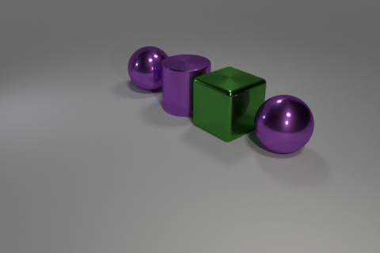
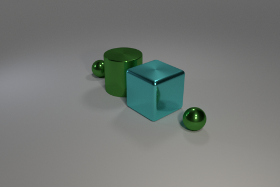
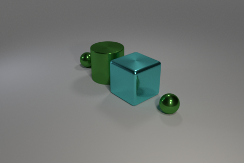
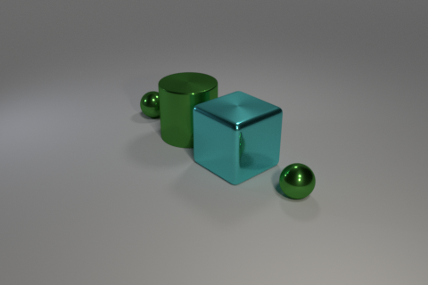
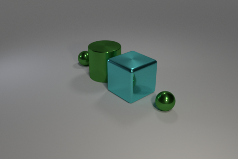

 


Train:

Candidates: 0, 1, 2
Intended concept: For all cylinders, there is a sphere to its left and to its right that have the same color and material.
Solution provided by tool:
Our tool chose candidate 0.
The discriminator given was: Exists q0: cylinder!0. Exists q1: sphere!1. And(right!1!0 same_color!0!1)
The neural baseline model chose candidate 1